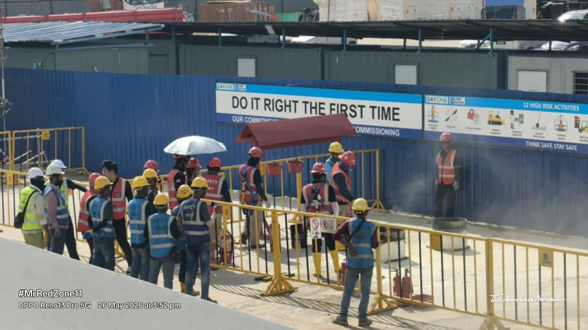
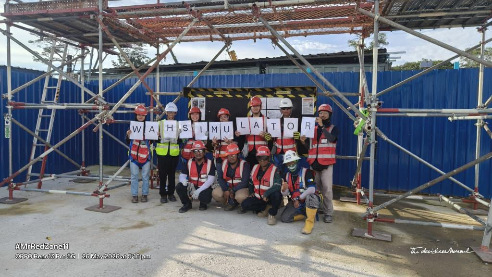
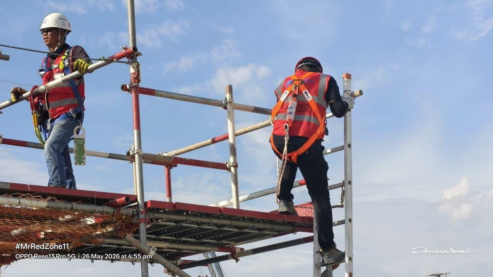

5 May 2026
Toolbox meeting and scissor-lift instruction.
I helped deliver the mass toolbox meeting and taught workers the essential safety steps for using a scissor lift.

Toolbox meeting
A hands-on month focused on how clear information supports safe decisions: leading a toolbox briefing, continuing operational duties, and completing practical safety training.
On 5 May, I helped lead the mass toolbox meeting and taught workers how to approach scissor-lift use safely.
I continued the regular operational responsibilities that keep the site organised while reinforcing the lessons from the toolbox session.
I took part in practical fire-safety training and personally learned how to operate an extinguisher correctly.
On 26 May, I completed the practical Work at Height Simulator experience rather than only observing the demonstration.
These photographs document activities I personally led or completed, from teaching workers to passing a practical work-at-height requirement.
I helped deliver the mass toolbox meeting and taught workers the essential safety steps for using a scissor lift.
I took part in the practical exercise and learned how to prepare, aim, and operate an extinguisher safely.

I completed the full practical experience myself, including climbing onto the scaffold and descending safely to meet the qualification requirement.

